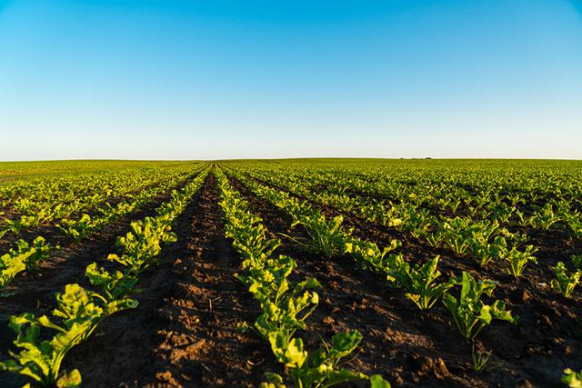

¿QUIENES SOMOS?

Poliempaques - Biólogicos de Occidente (P-BOcc) es una empresa colombiana con más de 30 años en el mercado de producción y fabricación de empaques plasticos, planes de fertilización y enmiendas agrícolas
los pales de fertilización que ofrece P-BOcc permite alcanzar rendimientos elevados y sostenibles en el tiempo. P-BOcc evalúa la necesidad de los suelos, y de acuerdo a los resultados de los análisis y el criterio de los expertos agrónomos, se realiza un proceso para enmendar el suelo con diferentes materiales.
¿QUIENES SOMOS?
P-BOcc es representante directo de las minas productoras de enmiendas. Adicionalmente, éstas son clientes exclusivos de P-BOcc lo que genera para nuestros clientes ganancias y rentabilidades operativas y económicas por no ser intermediarios

nuestras plantas de producción se encuentran ubicadas en Bogotá, Facatativá, Nobsa. Piedecuesta y Uribia. Desde haí distribuimos a nivel nacional los requerimientos de nuestris clientes.
Además, en los llanos orientales contamos con un amplio inventario para atender sus requerimientos y nececidades de manera inmediata.